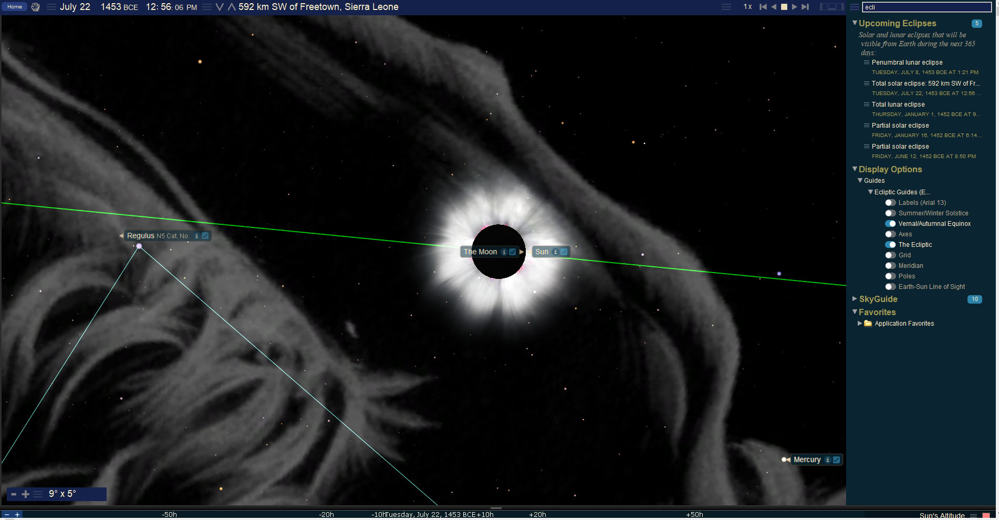
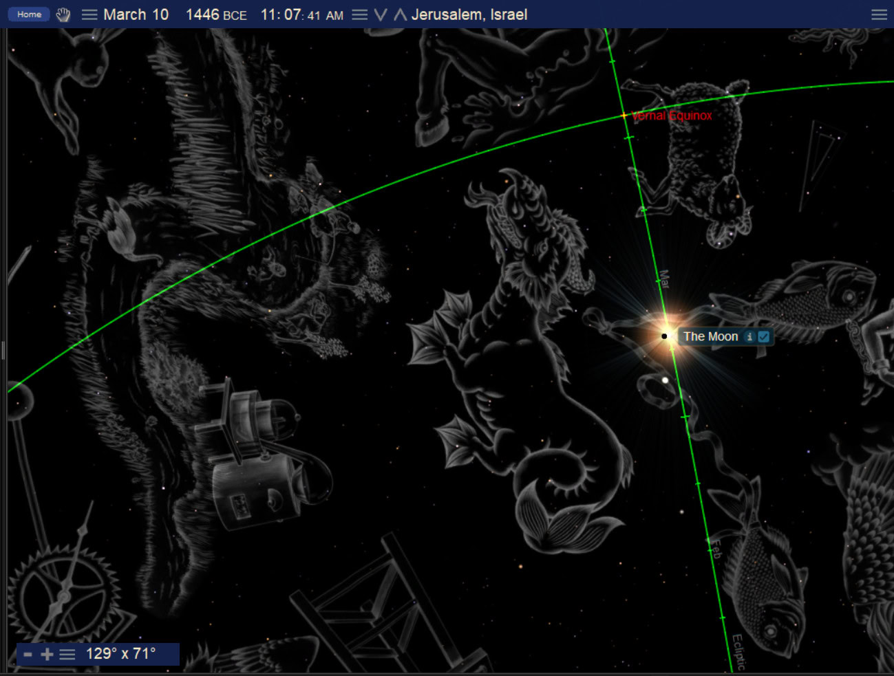
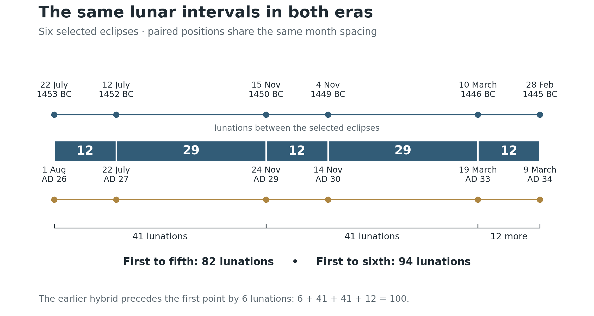
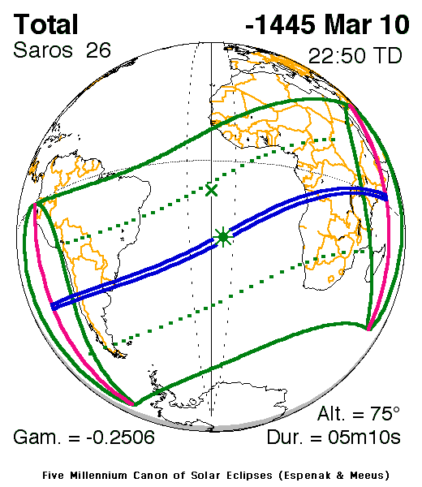

The Exodus in the Heavens
Book 2 · Celestial Signs of the First Advent · Chapter 5
The deliverance of Abraham’s family and its witness toward Christ
“Furthermore, I have heard the groaning of the Israelites, whom the Egyptians are enslaving, and I have remembered My covenant.”
Exodus 6:5 BSB
The family promised to Abraham is now in Egypt, under bondage. God connects their deliverance with the covenant He made with their fathers. The Exodus begins to answer the promise we considered in the previous chapter: Abraham’s descendants will become a people, and God will bring them into the land.[1]
This chapter examines selected solar eclipses surrounding the 1446 BC Exodus and compares their stellar settings with eclipses surrounding the coming of Christ. I find a repeated sequence of lunar intervals and close returns to the same stellar neighborhoods. The dates, the intervals between new moons, the positions against the stars, and the meaning I read in their recurrence need to remain clear.
I see the earlier deliverance bearing witness toward the greater deliverance in Christ. That reading begins in Scripture. At the Transfiguration, Moses and Elijah speak with Jesus about the departure He is about to accomplish at Jerusalem. Luke’s word is exodos. Moses, who led Israel out of Egypt, appears in glory to speak about Christ’s own Exodus (Luke 9:30–31).[2]
The heavenly perspective is already present in that scene. Israel’s deliverance belongs to an earthly history of slavery, judgment, and departure. From above, that history opens toward the work of the Son. This is the view from which I approach the celestial comparison.
Keep the Exodus at 1446 BC
I retain the Repository’s primary Exodus anchor of 1446 BC. The eclipse sequence does not establish that date independently, and its opening eclipse is several years earlier. We are examining signs around the deliverance within the chronological framework already stated.[3]
The earlier window begins with the hybrid solar eclipse of January 28, 1453 BC, and ends with the total solar eclipse of February 28, 1445 BC. A hybrid appears total along part of its central track and annular along another part. Between the two catalog entries lie 100 lunations, or cycles of the Moon from one new moon to the next. The interval between their named Julian dates is 2953 days.[4]
The window therefore reaches from before the Exodus into the following year. Within it, six particular eclipses supply the comparison with the later era. These six are a selection from the fuller record. Other eclipses occurred during both periods, and the comparison should remain visible as a selection with stated dates.
For maps of central eclipse paths, I distinguish total, annular, and hybrid eclipses from partial eclipses. That distinction matters for July 12, 1452 BC. NASA classifies it as a very deep partial, with a maximum magnitude of about 0.9944. It can be included when comparing stellar positions, but it supplies no central total or annular track to use as a drawn stroke across a map.[5]
Return to the same stellar neighborhoods
The first comparison joins July 22, 1453 BC, with August 1, AD 26. Both eclipses place the Sun in the Lion. The later comparison dates run through AD 34, surrounding the ministry and the AD 33 Passion anchor used in Book 1. The AD 34 event closes the comparison after the Cross. We will examine the later sequence in its own chapter; here it supplies the counterpart to the earlier signs.
The supplied sky view makes the Lion setting easier to see than a list of coordinates alone.


To compare positions across nearly 1500 years, we need a common coordinate grid. Earth’s axis changes direction slowly through precession, carrying the equinox and the coordinate grid with it. Coordinates expressed for the date of each event therefore cannot simply be set beside each other as though the grids were unchanged.
Here I use the same J2000 reference frame for both eras. The calculation compares the geocentric Sun’s center at astronomical conjunction, when the Moon and Sun have equal ecliptic longitude. That gives us a defined point and a defined instant for each comparison.[6]
The six pairings are as follows. All dates are Julian. The separations are calculated angles against that common grid; 60 arcminutes make 1 degree.
| Earlier eclipse | Later eclipse | Modern IAU region | Sun separation |
|---|---|---|---|
| July 22, 1453 BC · total | August 1, AD 26 · total | Leo | about 12.0′ |
| July 12, 1452 BC · partial | July 22, AD 27 · total | Leo | about 10.9′ |
| November 15, 1450 BC · total | November 24, AD 29 · total | Sagittarius | about 31.5′ |
| November 4, 1449 BC · total | November 14, AD 30 · total | Ophiuchus | about 29.3′ |
| March 10, 1446 BC · total | March 19, AD 33 · total | Pisces | about 17.4′ |
| February 28, 1445 BC · total | March 9, AD 34 · total | Pisces | about 19.1′ |
These are close returns to small regions of the sky, ranging from roughly 0.2 to 0.5 degrees under the stated calculation. The exact positions vary. The two Lion pairings are tighter than the four others.[7]
The modern region names also need to remain accurate. The November pairings fall in Sagittarius and Ophiuchus under formal IAU boundaries. Constellation artwork can extend into neighboring regions and show the Scorpion or Serpent-bearer nearby. That picture language has a place in my interpretation, but it should not replace the calculated location of the Sun.
The closing pairings return to the Fishes. The supplied March 10, 1446 BC view shows the setting in the conventional constellation artwork used in the source material.


I read the Lion in relation to kingship and the Fishes in relation to the people gathered through Christ. Those meanings develop from the biblical argument of the book. The positional calculation tells us where the events fall; it cannot, by itself, tell us why God ordered them there.
The repeated count is 41 months then 41 months
The six selected events have the same month spacing in both eras:
12 + 29 + 12 + 29 + 12 = 94 lunations.
The first two intervals combine to give 41 lunations. The next two do the same. A final interval of 12 lunations closes the sequence. In the named civil dates, those same gaps are:
355 + 856 + 355 + 856 + 355 = 2777 days.


Thus, from the first selected eclipse to the third, the date count is 355 + 856 = 1211 days. From the third to the fifth, it repeats: another 1211 days. Together they span 82 lunations and 2422 date-days. The sixth selected eclipse comes 12 lunations later, bringing the complete six-point sequence to 94.[8]
The 100-lunation Exodus window has an additional opening. Its January 28, 1453 BC hybrid lies 6 lunations before the first selected Lion eclipse. The whole count is therefore 6 + 41 + 41 + 12 = 100 lunations.
The counts are worth retaining as they stand. A 41-month span is about three and a third solar years. It is not an exact three-and-a-half-year period, nor is 1211 days another way of writing Revelation’s 1260 days. John’s 42 months and 1260 days belong to the theological setting in which I consider the pattern, while this particular astronomical sequence has its own measured intervals.[9]
The earlier and later sequences are also separated by the same number of lunar cycles. For each of the six pairs, NASA’s lunation indices differ by 18,281. Their named dates differ by 539,849 days. The exact intervals between conjunctions include fractions of a day, so the whole-day count should not be transferred to an exact hour.[10]
A Saros comprises 223 lunations. The long count can therefore be expressed as 82 × 223 − 5 = 18,281 lunations. This explains the source’s reference to an 82-Saros relation, but the subtraction of 5 lunations must remain in the statement. The paired eclipses belong to different Saros series. They are related across a long count; they are not repeated members of one unchanged series.[11]
The calendar has its own testimony
The Exodus gives Israel a beginning of months. God places the Passover within that calendar, and the people are to keep it in remembrance of their deliverance. The calendar marks the event for generations who were not present in Egypt (Exodus 12:1–14).[12]
A solar eclipse takes place at new moon. That makes it relevant to the beginning of a lunar month, but astronomical conjunction and the first visible crescent are different events. The eclipse does not, by itself, tell us on which evening an ancient community proclaimed its month.
The source comparison associates the Lion openings with Av and the closing Fishes events with Adar or Nisan. These are reconstructed calendar associations. The exact month depends on the rule used to begin the year, the intercalation, and the start of the month. A return to the same stars need not return to the same Hebrew month name: the seasons shift against the stars over the centuries.[13]
The Aaron and Moses comparison belongs here with its chronology intact. Aaron’s death is explicitly placed on the first day of the fifth month, in the fortieth year after the Exodus. Moses’ death and the people’s 30 days of mourning belong near the entry into the land. Those events occur at the end of the wilderness period, not within the 1453–1445 BC eclipse window (Numbers 33:38–39; Deuteronomy 34:5–8).[14]
I am comparing their calendar positions with the earlier and later signs. The next chapter will follow the men and the people toward the Jordan. We should not move their deaths backward into the Exodus decade in order to make a calendar resemblance appear exact.
Darkness near the waters that sustain Egypt
The March 10, 1446 BC eclipse supplies a geographical comparison as well as a stellar one. In the NASA model, its totality track crosses the Atlantic and reaches the Lake Victoria region of East Africa. Lake Victoria belongs to the White Nile headwaters system. The source reads darkness over that region as a sign directed toward the river on which Egypt depends.[15]


The location has force within the Exodus narrative. God declares judgment against the gods of Egypt. The river and the light of the Sun are parts of His creation, subject to His command. I therefore read the eclipse near the Nile’s headwaters as a fitting witness to His authority over what sustains Egypt.
The broad geographical association is more secure than a claim about one precise place. Ancient ground tracks depend on our reconstruction of Earth’s rotation. Near this period, the uncertainty in that reconstruction can shift the plotted track several degrees east or west. The map cannot establish that the Nile’s outlet at modern Jinja certainly lay under totality. I retain the Lake Victoria comparison at the regional scale.[16]
Nor do I identify this ordinary solar eclipse with the three days of darkness in Exodus 10. A few minutes of totality cannot account for that duration. The eclipse can bear witness alongside the history without becoming a mechanism used to reduce the biblical event to an ordinary eclipse.[17]
Its significance also need not depend on an Egyptian observer knowing what happened far upriver. The God who remembers His covenant is not confined to the view from Pharaoh’s court. From heaven, the river, its distant waters, and the people in bondage belong to one field of action.
The pattern continues toward the land
The Exodus window also connects to the Conquest window that follows. NASA’s lunar indices give 100 lunations for each window, with 475 between the end of the earlier one and the beginning of the later one:
100 | 475 | 100 lunations.
The later window begins on July 25, 1407 BC, and ends on August 24, 1399 BC. From the beginning of one window to the beginning of the other are 575 lunations; the end-to-end count is also 575. The number factors as 23 × 25. Its place in the book’s larger numerical reading will become clearer once the Conquest events themselves are before us.[18]
These are surrounding signs, spread across a history of deliverance and inheritance. The Exodus takes place in 1446 BC. The Jordan crossing follows in 1406 BC. The celestial windows reach around those anchors, and we must keep the signs and the events they accompany distinguishable.
Moses and Aaron stand together before Pharaoh as commissioned witnesses. Revelation later brings plague imagery into its account of two witnesses, including water turned to blood and the striking of the earth. I read the earlier history as part of the scriptural language available to John, without assigning the two witnesses the names of Moses and Aaron as though John had supplied them (Revelation 11:3–6).[19]
The strongest connection remains Christ Himself. Moses appears in glory to speak about His Exodus. That conversation brings the earlier deliverance into the presence of the One toward whom I believe it points. The recurring sky positions and lunar counts belong within that reading of the history.
The family promised to Abraham has been brought out. It still has to pass through the wilderness and enter the land. We now follow that movement toward the Jordan, with the heavens continuing their witness above it.
Sources and calculation notes
1. Exodus 6:4–8 BSB. The opening quotation reproduces verse 5. The connection between deliverance and the patriarchal covenant is explicit. Return
2. Luke 9:30–31 BSB and Greek text of Luke 9:31. The word translated “departure” is the accusative exodon, from exodos. The text supplies Moses and Elijah in glory; the Christological reading of the celestial comparison is the author’s interpretation. Return
3. Current Canon, File 5 §1. The primary anchor remains 1446 BC. File 6 controls the 1406 BC Moses-death/Conquest transition. Both were checked October 19, 2026. Return
4. NASA solar catalog, 1500–1401 BC, entries 01306 and 01325. Astronomical years −1452 and −1444 mean 1453 and 1445 BC. Their lunar indices differ by 100. The noon date references are 1190742 and 1193695: difference 2953. Catalog dates identify greatest eclipse in dynamical time; differences of these date references are not exact maximum-to-maximum intervals. Return
5. Same NASA catalog, entry 01310, July 12, 1452 BC. Magnitude is the fraction of the solar diameter covered at maximum, not the percentage of disk area. The partial classification is retained. The full earlier window contains other eclipses, including central eclipses, beyond the selected comparison. Return
6. Calculations accompanying this chapter use Swiss Ephemeris with the explicit Moshier model, the geocentric Sun at Sun–Moon ecliptic-longitude conjunction, and J2000 equatorial vectors. The calculation record and CSV preserve instants, vectors and angular separations. Modern IAU regions were evaluated from those J2000 directions with Astronomy Engine. The coordinate reference is not the equinox of either ancient date. Return
7. The table reports the primary calculation to 0.1 arcminute, rounded as model output. An Astronomy Engine Sun-position cross-check at the same instants gives approximately 10.7′, 9.0′, 31.9′, 29.8′, 18.2′ and 19.8′. The older assertion that every pair is within 12.16′ is not retained. The November regions are Sagittarius and Ophiuchus in both eras, rather than formal Ophiuchus and Scorpius memberships. Source artwork and modern regions are distinguished. Return
8. NASA entries 01307/01310/01315/01317/01323/01325 and AD entries 04839/04841/04847/04849/04856/04858. In each selected sequence the lunar-index gaps are 12/29/12/29/12; Julian date-reference gaps are 355/856/355/856/355. First-to-fifth: 82 lunations and 2422 date-days. First-to-sixth: 94 and 2777. Other totals, including July 10, AD 28 and November 3, AD 31, lie between the selected later entries. These six are not an exhaustive list of total eclipses. Return
9. Revelation 11:2–3 BSB. The book’s witness comparison is typological. Forty-one lunations should not be described as an exact 42-month, 1260-day, or three-and-a-half-solar-year interval. The raw source’s proposed Sinai 40 + 2 + 40 analogy is omitted because the intervening two-day count is not established by Exodus 24 or Deuteronomy 9. Return
10. Each NASA lunar-index difference is exactly 18,281; each stated civil-date difference is 539,849 days. Calculated conjunction intervals are about 539,848.6 TT days. The table is a comparison of year/date labels and celestial cycles, not a common ancient local clock. Return
11. NASA discussion of solar-eclipse periodicity, especially §1.4. One Saros is 223 lunations. Here 82 × 223 − 5 = 18,281. For example, the first pair belongs to Saros 32 and 65. No same-series identity, unchanged ground track, or exact 82-Saros interval is asserted. Return
12. Exodus 12:1–14 BSB. The beginning of months, the Passover observance, and judgment against Egypt’s gods are explicit. An ordinary new-moon solar eclipse is distinct from the lunar phase of the Passover festival. Return
13. File 12, Calendrical Physics. The raw section’s same-evening rollover from eclipse to month day 1 is an illustrative rule, not a recovered crescent sighting or ancient proclamation. This chapter does not certify its Av/Adar/Nisan assignments, or the archive filename’s “2 Adar,” as unique historical dates. Return
14. Numbers 33:38–39 and Deuteronomy 34:5–8 BSB. Aaron’s fifth-month date and age 123 are explicit. Moses’ 30-day mourning is explicit; Deuteronomy does not name the month or day of his death. The dates belong to the closing wilderness period. Return
15. NASA entry 01323 and its original global map. The map’s −1445 is astronomical numbering for 1446 BC, and its 22:50 TD is the rounded dynamical-time maximum. For Lake Victoria within the White Nile system, see NASA’s geographical account. Credit: Fred Espenak and Jean Meeus, NASA’s Five Millennium Canon. “Darkness near the Nile’s headwaters” is the author’s geographical and theological reading, not an Egyptian eyewitness report. Return

16. NASA’s discussion of ancient track uncertainty. A 1900-second change in Earth-rotation timing corresponds to about 7.9° of longitude. This illustrates the geographical sensitivity; it is not a guaranteed outer boundary. The original supplied Jinja annotation is not promoted to a settled local-totality claim. A separate calculation record preserves an illustrative sensitivity check, with its model limits. Return
17. Exodus 10:21–23 BSB. The three days of darkness are distinguished from the brief ordinary eclipse. The biblical account is not reduced to the calculated event. Return
18. NASA entries 01306/01325, entry 01413 for July 25, 1407 BC, and entry 01431 for August 24, 1399 BC. Lunar-index differences give 100 | 475 | 100; 575 = 23 × 25 start-to-start and end-to-end. The two 100-lunation date spans are 2953 and 2952 days; the two 575-lunation date spans are 16980 and 16979 days. Matching month counts do not require identical whole-day intervals. Return
19. Revelation 11:3–6 BSB. Plague imagery supports the comparison with the Exodus witnesses. The identities of John’s two witnesses are not established by the eclipse calculation. Return
Scripture quotations are from the Berean Standard Bible (BSB), dedicated to the public domain. Berean Bible.
← Previous: Chapter 4 — Abraham and the Promise to the Nations
Book 2 contents
Next: Chapter 6 — Joshua and the Crossing into the Land →